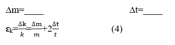
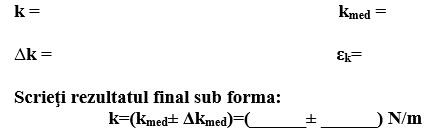

SCOPUL LUCRĂRII:Să se studieze pendulul elastic și să se determine constanta elastica a arcului.
MATERIALE NECESARE:Arc elastic, rigla, stativ, corpurile cu masa marcate, cronometrul
CONSIDERAŢII TEORETICE:Pendulul elastic reprezintă un corp suspendat de un arc elastic care oscileaza sub influența forței elastice. Perioada oscilațiilor pendulului elastic este determinat de relația:
Erori:

MODUL DE LUCRU:
| Nr. | m,kg | N | t,s | T,s | k, N/m | Δk, N/m | ε, % |
|---|---|---|---|---|---|---|---|
| 1 | |||||||
| 2 | |||||||
| 3 | |||||||
| 4 | |||||||
| 5 | |||||||
| 6 | |||||||
| 7 | |||||||
| 8 | |||||||
| 9 | |||||||
| Valori medii | |||||||
Calcule:

CONCLUZII:________________________________________________________________________________________________________________________________ ________________________________________________________________________________________________________________________________ ________________________________________________________________________________________________________________________________ ________________________________________________________________________________________________________________________________
Deduceți relațiile (3) și (4).
___________________________________________________________________
___________________________________________________________________
___________________________________________________________________
De ce în relația(4) nu este considerate eroarea constantei π?
___________________________________________________________________
___________________________________________________________________
___________________________________________________________________
Cum influențează masa arcului asupra perioadei oscilațiilor?
___________________________________________________________________
___________________________________________________________________
___________________________________________________________________